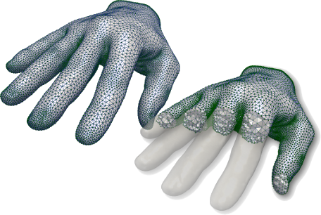
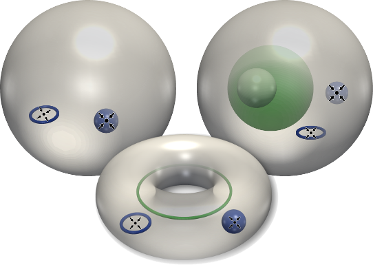
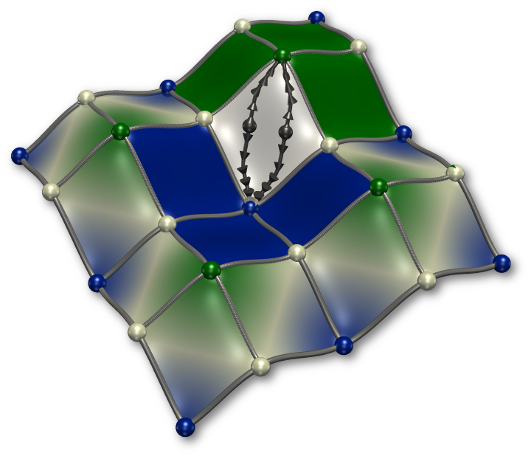
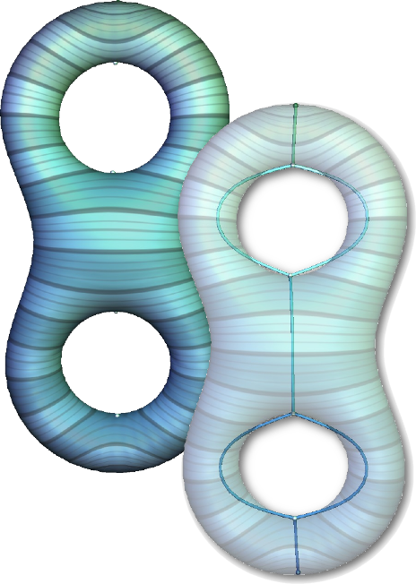
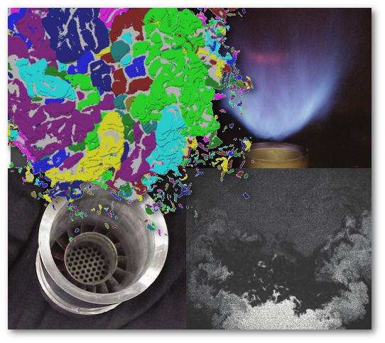
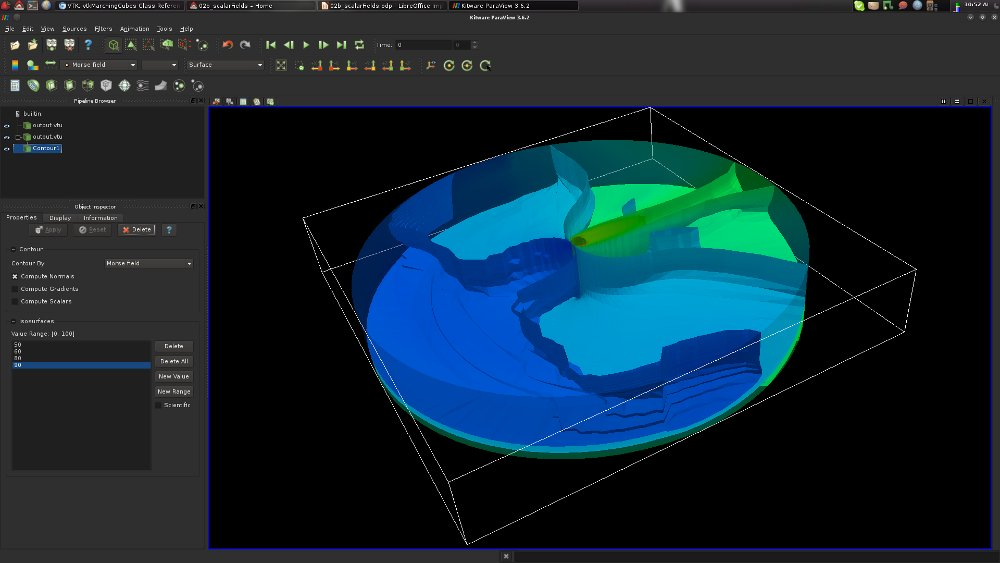
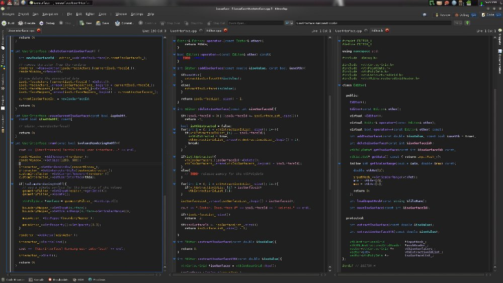

LAST MINUTE UPDATES
· Welcome!· Research Seminar
What?
Topological Data Analysis [1][2][3] is is a sound family of techniques that is gaining an increasing importance for the interactive analysis and visualization of data in imaging and machine learning applications. Given the increasing complexity and size of current collections of acquired or simulated data-sets (2D, 3D and nD), these approaches aim at helping users understand the complexity of their data by providing insights about its topological and geometric structure.In low dimensions (typically 2 or 3), Topological Data Analysis enables users to rapidly extract, interact with, and classify geometric features defined by level sets or integral lines [4] [5] [6] [7] [8] [9] [10]. Thanks to simplification mechanisms based on Persistent Homology, such algorithms additionally construct multi-scale topological representations of the data, that enable users to perform robust analyses and comparisons despite the presence of noise. The soundness, efficiency and robustness of this class of approaches made it increasingly popular in the last few years in a variety of 2D and 3D imaging analysis applications [11] [12] [13] [14] [15] [16]. In higher dimensions, these techniques have recently been adapted to form the basis of new clustering algorithms and data analysis tools [17] [18] [19] [20] [21] [22] [23] [24] [25].
The purpose of this course is to introduce the main concepts of the recent field of Topological Data Analysis and illustrate their use in imaging (scientific visualization) and machine learning applications, both from a mathematical and practical point of view.
Who?
This class targets students (Master level) following applied mathematics or computer science tracks, covering topics such as:· Image Processing,
· Computer Vision,
· Machine Learning,
· Scientific Visualization,
· Scientific Engineering,
· Modeling and Simulation,
· Computer Graphics,
· Multimedia Engineering
. It requires no specific prior knowledge, except a bachelor-level knowledge in mathematics and a working knowledge of programming (ideally with Python and/or C++).
The instructors for this class are:
· Frederic Chazal, INRIA,
· Julien Tierny, CNRS.
What for?
The content of this class is useful for any student targeting research and development activities (either in the academy or the industry) in imaging or machine learning applications, scientific engineering, numerical simulation, physical sciences or software engineering. It is a must-select for students targeting jobs in 3D modeling, simulation and analysis software industry (Kitware, Amira, etc.). Finally, computational topology techniques recently gained an important popularity among data analytics companies [26].Topological Data Analysis is also a well established class of techniques in the field of scientific data visualization and analysis. As such, it becomes a key ingredient in any application dealing with geometrical data (acquired or simulated) for their interactive analysis. French industrial actors of that area such as the CEA, EDF, TOTAL and ONERA have therefore a strong interest in this topic.
Detailed syllabus
The class is composed of 6 lectures (2 hours each), 6 programming exercises (2 hours each) and one scientific seminar (3 hour long).Tentative, incomplete course notes can be found HERE. A reference text book on the topic [2] can be found THERE.
A virtual box image containing all the software packages required for the practical exercises (TTK, etc.) can be downloaded HERE (md5sum: f72a2e455e1533baef1fe19e745070df ).
The lectures will cover the following topics:
|  |
Simplicial homology - J. Tierny
This lecture introduces the key concepts for representing a geometric domain with a simplicial complex. Basic notions of topology on these simplicial complexes will be presented and the notion of homology groups will be introduced with examples. Class intro - Slides - White board Exercise package 1 |
|
|  |
Persistent homology - F. Chazal
This lecture introduces a fundamental tool in topological data analysis for the evaluation of the stability of topological features, namely persistent homology. The notions of filtration and persistent homology groups will be introduced and discussed. Based on that, constructions such as the persistence diagrams will be described and stability results will be discussed. Finally, a computation strategy will be described. Slides Exercise package 2 |
|

|
Morse functions and Reeb graphs - J. Tierny
This lecture introduces piecewise linear (PL) Morse functions, typically used to represent some input scalar data attached to the input geometrical domain. Barycentric coordinates and their properties will be reviewed. Geometrical features (such as level sets, integral lines) will be introduced as well as algorithms for their computation. PL critical points (and their relation to their smooth counterparts) will be introduced, along with algorithms for their computation. PL Morse function will be introduced. Their relation to smooth Morse functions and persistent homology will be discussed. Finally, the Reeb graph and its variants will be introduced with algorithms for their computation as well as applications. Slides - White board Exercise package 3 |
|
|  |
Discrete Morse Theory and
Morse-Smale Complexes - J. Tierny
This lecture introduces a modern development of Morse theory within a fully discrete setting. On top of its theoretical appeal, this development recently became a necessary ingredient in practice for many topological analysis tasks, in particular in low dimensions. The notion of Morse-Smale complex will be introduced as well as reasons for the difficulty of its computation in the PL setting. Next, the building blocks of Discrete Morse Theory will be introduced and discussed (Discrete Morse function, discrete gradient field, V-paths). An example of algorithm for discrete gradient field computation will be presented and relations to the PL setting will be discussed. Algorithms for the computation and simplification of the Morse-Smale complex will be described, along with applications. Finally perspectives regarding topological data analysis in low dimensions for scientific visualization applications will be discussed. Slides - White board Exercise package 4 |
|
|  |
Statistical aspects of persistence and topological inference for
high-dimensional point clouds - F. Chazal
This lecture will show how filtrations and persistence diagrams can be constructed and computed from data to be used as multiscale topological signatures describing relevant informations about the structure of data. The statistical properties of these signatures will be presented and discussed. Exercise package 5 |
|
|  |
Towards kernels for persistence - F. Chazal
This lecture will introduce and discuss various methods to turn persistence diagram information into relevant features for further data processing. In particular, different constructions of kernels from persistence diagrams will be presented and discussed. Exercise package 6 |
|
A virtual box image containing all the software packages required for the practical exercises (TTK, etc.) can be downloaded HERE.
|  |  |
These exercises will re-visit from a practical perspective the topics covered during the lectures, including:
· Exercise 1: Betti numbers;
· Exercise 2: Introduction to GUDHI;
· Exercise 3: Interactive Topological Data Analysis with TTK;
· Exercise 4: Interactive Topological Data Analysis with TTK (bis);
· Exercise 5: Topological Data Analysis with Gudhi;
· Exercise 6: Topological Data Analysis with Gudhi (bis);
By the end of this class, students will have gained theoretical insights on the fundamental aspects of topological data analysis. Moreover, the practical sessions will provide them a working knowledge of Gudhi, VTK, TTK, ParaView and a practical understanding of such algorithms.
Personal work
The grading of this class is based on two evaluations:· A written exam (last session of the class);
· A scientific seminar where each student presents a recent scientific paper on topological data analysis for 10 minutes (last session of the class);
Seminar
· At the beginning of the class, a list of recent scientific papers on topological data analysis is presented to the students. Each student must select one paper to present.· During the last session of the class, each student presents his/her paper, explaining what the contributions of the paper are, what its strengths and weaknesses are and why he/she personally chose to present this paper.
· Each presentation is followed by a 5 minutes QA session.
>>> Seminar webpage.
Exam
A 30-minute written exam will be given at the beginning of the last session of the class (multiple choice test).References
[1] MyWhyU: "A humorous look at the topology of curved space.", MyWhyU Youtube channel.[2] H. Edelsbrunner, J. Harer, "Computational Topology: An Introduction", American Mathematical Society, 2010.
[3] V. Pascucci, X. Tricoche, H. Hagen, J. Tierny, "Topological methods in data analysis and visualization", Springer, 2010.
[4] P. Monasse, F. Guichard, "Scale-space from a level lines tree", Journal of Visual Communication and Image Representation, 2000.
[5] P. Monasse, F. Guichard, "Fast computation of a contrast-invariant image representation". IEEE Transactions on Image Processing, 2000.
[6] J. Tierny, A. Guylassy, E. Simon, V. Pascucci, "Loop surgery for volumetric meshes: Reeb graphs reduced to contour trees." IEEE Transactions on Visualization and Computer Graphics, 2009.
[7] V. Robins, P. Wood, A. Sheppard, "Theory and Algorithms for Constructing Discrete Morse Complexes from Grayscale Digital Images", IEEE Transactions on Pattern Analysis and Machine Intelligence, 2011.
[8] J. Tierny, V. Pascucci, "General topological simplification of scalar fields on surfaces", IEEE Transactions on Visualization and Computer Graphics, 2012.
[9] C. Li, M. Ovsjanikov, F. Chazal, "Persistence-based structural recognition", IEEE CVPR 2014.
[10] Y. Xu, E. Carlinet, T. Geraud, L. Najman, "Hierarchical Segmentation Using Tree-based Shape Spaces", IEEE Transactions on Pattern Recognition and Machine Intelligence (PAMI), 2016.
[11] D. Laney, T. Bremer, A. Mascarenhas, P. Miller, V. Pascucci, "Understanding the structure of the turbulent mixing layer in hydrodynamic instabilities", IEEE Transactions on Visualization and Computer Graphics, 2006.
[12] J. Kasten, J. Reininghaus, I. Hotz, H. Hege, "Two-dimensional time-dependent vortex regions based on the acceleration magnitude", IEEE Transactions on Visualization and Computer Graphics, 2011.
[13] T. Sousbie, "The persistent cosmic web and its filamentary structure: Theory and implementations", Royal Astronomical Society, 2011.
[14] T. Bremer, G. Weber, J. Tierny, V. Pascucci, M. Day, J. Bell, "Interactive exploration and analysis of large scale simulations using topology-based data segmentation", IEEE Transactions on Visualization and Computer Graphics, 2011.
[15] D. Gunther, R. Alvarez-Boto, J. Contreras-Garcia, J.P. Piquemal, J. Tierny, "Characterizing molecular interactions in chemical systems" IEEE Transactions on Visualization and Computer Graphics, 2014.
[16] A. Guylassy, T. Bremer, R. Grout, H. Kolla, J. Chen, V. Pascucci, "Stability of dissipation elements: a case study in combustion", Computer Graphics Forum, 2014.
[17] H. Carr, J. Snoeyink, U. Axen, "Computing contour trees in all dimensions", ACM Symposium on Discrete Algorithms (SODA) 2000.
[18] G. Carlsson, "Topology and Data", American Mathematical Society, 2009.
[19] W. Harvey, "Understanding high-dimensional data using Reeb graphs", Ph.D. Thesis, Ohio State University, 2012.
[20] F. Chazal, L. Guibas, S. Oudot, P. Skraba, "Persistence-based clustering in Riemannian manifolds", Journal of the ACM, 2013.
[21] A. Glazer, O. Weissbrod, M. Lindenbaum, S. Markovitch, "Approximating Hierarchical MV-sets for Hierarchical Clustering", Advances in Neural Information Processing (NIPS) 2014.
[22] B. Rieck, H. Leitte, "Persistent homology for the evaluation of dimensionality reduction schemes", Computer Graphics Forum, 2015.
[23] J. Eldridge, M. Belkin, Y. Wang, "Beyond Hartigan Consistency: Merge Distortion Metric for Hierarchical Clustering", Conference on Learning Theory (COLT) 2015.
[24] J. Reininghaus, S. Huber, U. Bauer, R. Kwitt, "A Stable Multi-scale Kernel for Topological Machine Learning", IEEE CVPR 2015.
[25] S. Dasgupta, "A Cost function for similarity-based hierarchical clustering", ACM Symposium on Theory of Computing (STOC) 2016.
[26] http://www.kdnuggets.com/2015/01/interview-anthony-bak-ayasdi-toplogical- summaries.html
[27] http://www.vtk.org
[28] http://www.paraview.org
[29] Gudhi - Geometry Understanding in Higher Dimensions - http://gudhi.gforge.inria.fr/
[30] TTK - the Topology ToolKit - https://topology-tool-kit.github.io/
Internships, Ph.D. Thesis, permanent positions in data analysis and visualization
Each year, several research internships on data analysis and visualization topics are proposed (either in academic or industrial environments). These internships can usually be followed by a Ph.D. thesis. Please contact the instructors for more information.2021-2022
Open Master Internship on topological data analysis and neural networks at TotalEnergiesOpen Master Internship (with Ph.D. follow up) on topological data analysis at Sorbonne
Open Master Internship on topological data analysis at Université Gustave Eiffel
Open Master Internship on topological data analysis at Kili Technology
Open Master Internship on topological data analysis at EDF
2020-2021
Open Master Internship on topological data analysis at Mauna Kea TechnologiesOpen Master Internship (with Ph.D. follow up) on topological data analysis and visualization at Sorbonne
Open Master Internship on topological data analysis at INRIA and IFPEN
Open Master Internship (with Ph.D. follow up) on topological data analysis and visualization at Sorbonne
Open Master Internship on mathematical visualization at Sorbonne
2019-2020
Open Master Internship on topological data analysis at Mauna Kea TechnologiesOpen Master Internship on topological data analysis at INRIA
Open Master Internship on topological data analysis at Sorbonne in collaboration with Total (with Ph.D. continuation)
Open Master Internship 1 on topological data analysis and visualization at Sorbonne (with Ph.D. continuation)
Open Master Internship 2 on topological data analysis and visualization at Sorbonne (with Ph.D. continuation)
Open Master Internship 3 on topological data analysis and visualization at Sorbonne (with Ph.D. continuation)
2018-2019
Open research engineer position 1 at Cintoo (Nice, France)Open research engineer position 2 at Cintoo (Nice, France)
Open Master2 Internship 1 at Sysnav (Vernon, France)
Open Master2 Internship 2 at Sysnav (Vernon, France)
Open Master2 Internship 3 at Sysnav (Vernon, France)
Open Master2 Internship 4 at Sysnav (Vernon, France)
Open Master2 Internship 5 at Sysnav (Vernon, France)
Open research engineer position on topological data analysis and visualization at Sorbonne
Open Master Internship 1 on topological data analysis at Sorbonne (with Ph.D. continuation)
Open Master Internship 2 on topological data analysis at Sorbonne (with Ph.D. continuation)
Open Master Internship 3 on topological data analysis at Sorbonne (with Ph.D. continuation)
Open Master Internship 4 on topological data analysis at Sorbonne (with Ph.D. continuation)
Open Master2 Internship on topological data analysis and visualization of 3D scientific data at Total (Pau, France)
Open Master2 Internship 1 on topological data analysis at BMW (Munchen, Germany)
Open Master2 Internship 2 on topological data analysis at BMW (Munchen, Germany)
Open Master2 Internship 3 on topological data analysis at BMW (Munchen, Germany)
Open Master2 Internship 4 on topological data analysis at BMW (Munchen, Germany)
Open Master2 Internship 5 on topological data analysis at BMW (Munchen, Germany)
Open Master2 Internship on topological data analysis and visualization of 3D scientific data at CEA (Le Barp, France)
One permanent engineer position in 3D data analysis and visualization at Total! (Saclay, France)
2017-2018
Open Master Internship 1 (at UPMC)Open Master Internship 2 (at UPMC)
Open Master Internship 3 (at UPMC)
Open Master Internship 4 (at UPMC)
Open Master Internship 5 (at UPMC)
Open Master Internship 6 (at UPMC)
Open Master Internship 7 (at INRIA, Aviz team)
Open Master Internship 8 (at ISCD)
Open Master Internship 9 (at ISCD)
Open Ph.D. position in New Orleans (at Tulane University)
Five permanent software engineer positions in 3D data analysis and visualization and HPC at Kitware! (Lyon, France)
One permanent software engineer position in 3D data analysis and visualization at CEA! (Bordeaux, France)
One permanent software engineer position in 3D modeling and mesh generation at Coventor (Paris, France)
Updated on Nov. 8, 2022.